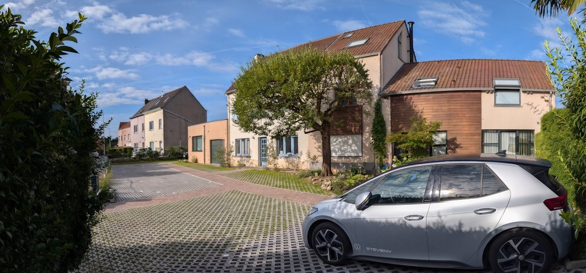
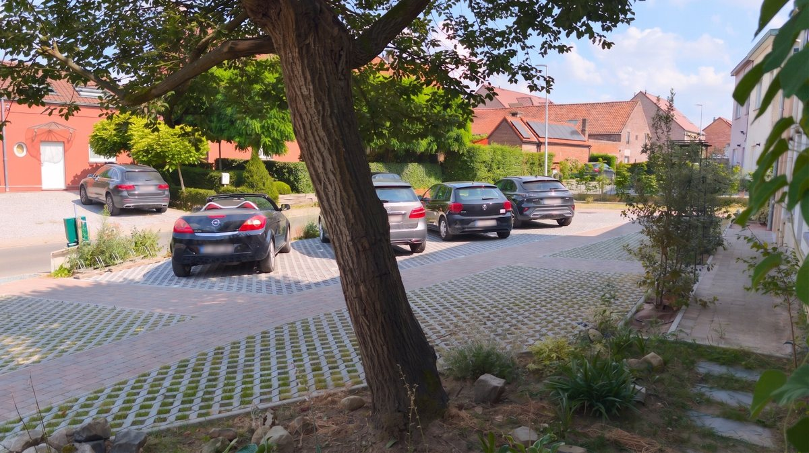

Sinds 2013
Gelegen in de Rue du Château d'Eau, midden in Eigenbrakel, verwelkomt het centrum patiënten en zorgverleners in een rustige en vlot bereikbare omgeving.

Het Medisch Centrum Château d'Eau opende in 2013 zijn deuren. Ontworpen als een zorgplek op mensenmaat, biedt het patiënten een warme omgeving en een vlotte toegang, in een rustige wijk van Eigenbrakel.
Doorheen de jaren is het centrum meegegroeid met de noden van zijn patiënten, met behoud van zijn oorspronkelijke missie: kwaliteitsvolle kinesitherapie aanbieden, dicht bij huis en met aandacht voor elke patiënt.

Het centrum beschikt over een eigen parking vlak voor de ingang, rechtstreeks toegankelijk vanaf de Rue du Château d'Eau. Zo verloopt elke afspraak zonder parkeerstress.
Ontdek de diensten die het centrum aanbiedt.
Bekijk onze diensten